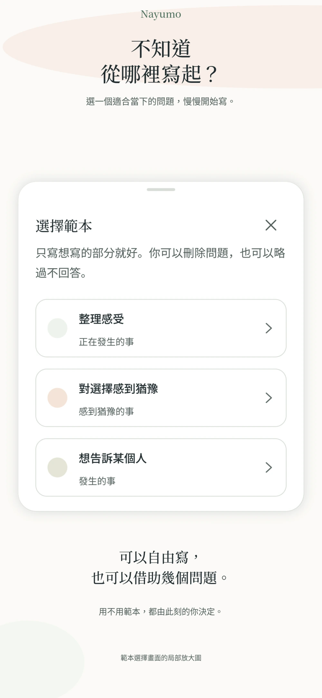
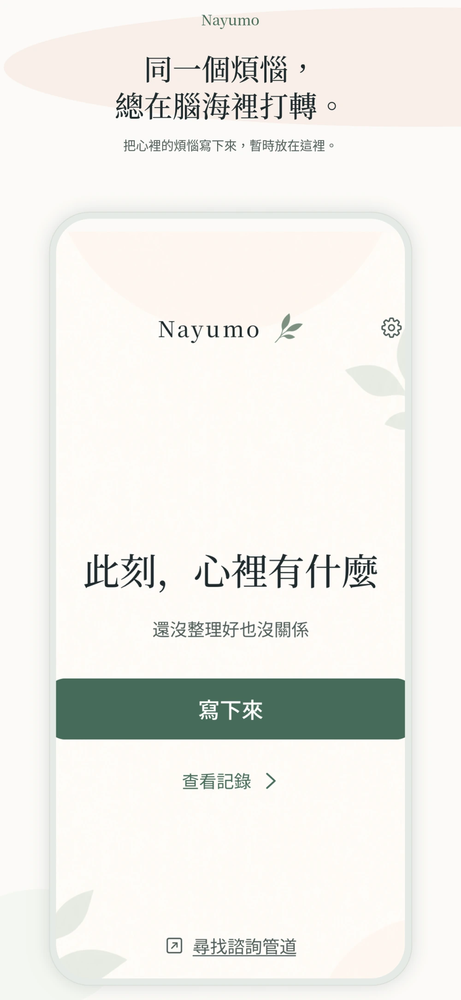
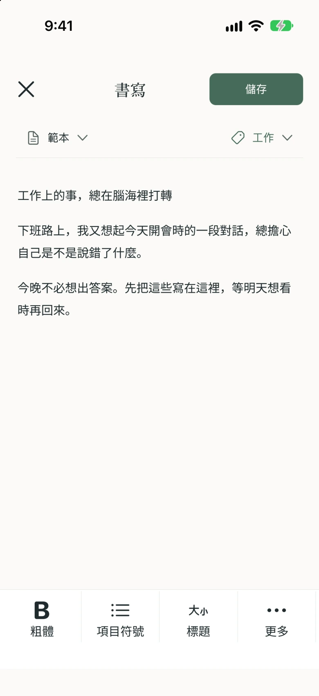
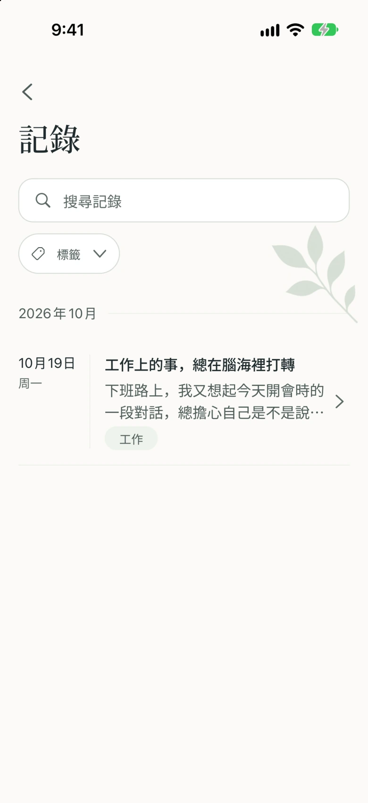
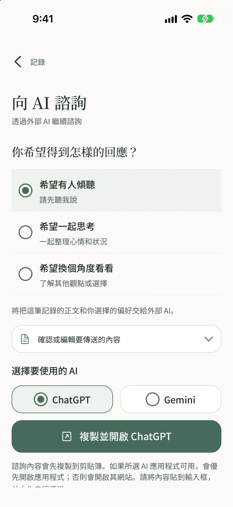

還沒理清，
也能開始寫。
可以自由寫，也可以借助問題。
整理感受、面對選擇、想對別人說的話，
選一個適合當下的範本。

Nayumo 是一款記錄煩惱與心情的免費筆記 App。把反覆盤旋的念頭寫下來，暫時放在這裡。還沒找到答案，也可以先儲存。


還沒整理好，也沒關係。
從一句話開始，照自己的步調。
可以自由寫，也可以借助問題。
整理感受、面對選擇、想對別人說的話，
選一個適合當下的範本。

還沒有答案，也可以先儲存。
寫一句話，或很長一段都可以。
什麼時候停筆，由你決定。
用搜尋和標籤找到儲存的記錄。
首頁不直接顯示過去的內文，
讓你從此刻的心情重新開始。


希望有人傾聽。希望一起思考。希望換個角度看看。
選好你想得到的回應，再準備要說的話。
交流透過外部 AI 服務進行。請自行貼上並傳送內容。外部服務的使用條款與費用可能另行適用。
寫下的記錄儲存在你的裝置中。要交給外部 AI 的內容，由你自行選擇並確認。
支援透過裝置的生物辨識或密碼鎖定 App。可以在設定中選擇適合自己的保護方式。
開啟 App，從此刻的心情開始。想回顧過去的文字時，再開啟記錄查看。
廣告與外部 AI 服務會使用網路連線。詳情請參閱隱私權政策。
Nayumo 是一款把煩惱與心情寫下來、暫時放在這裡的筆記 App。支援書寫範本、標籤搜尋，以及為外部 AI 準備諮詢內容。本 App 不用於醫療診斷或治療。
可以免費使用。
交流透過 ChatGPT、Gemini 等外部 AI 服務進行。你可以在 Nayumo 選擇希望得到的回應，確認並編輯內容後複製，再自行貼到外部 AI 並傳送。
不會。Nayumo 不會自動把記錄傳送給外部 AI。請先確認諮詢內容，再自行複製、貼上並傳送。傳送給外部 AI 的內容，將依該服務的政策處理。
沒有網路時，也可以寫筆記和查看裝置內儲存的記錄。廣告、外部 AI 服務和支援頁面等需要網路連線。
Nayumo 不提供自己的雲端同步功能，記錄儲存在裝置內。你可以將所需記錄匯出為 Markdown 或 ZIP 檔案，但這不代表能自動移轉或同步到另一台裝置。
等你想繼續時，再回來。